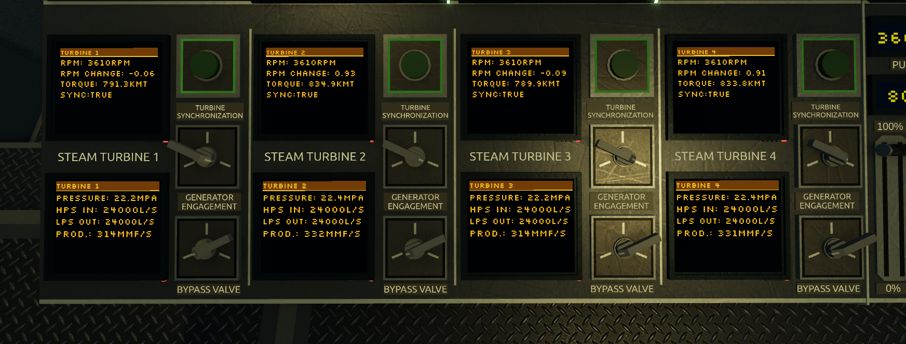
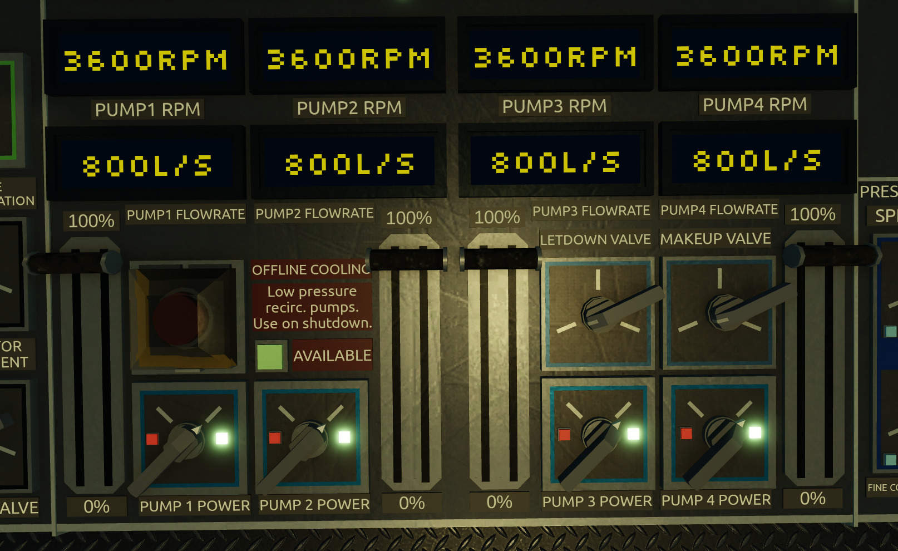
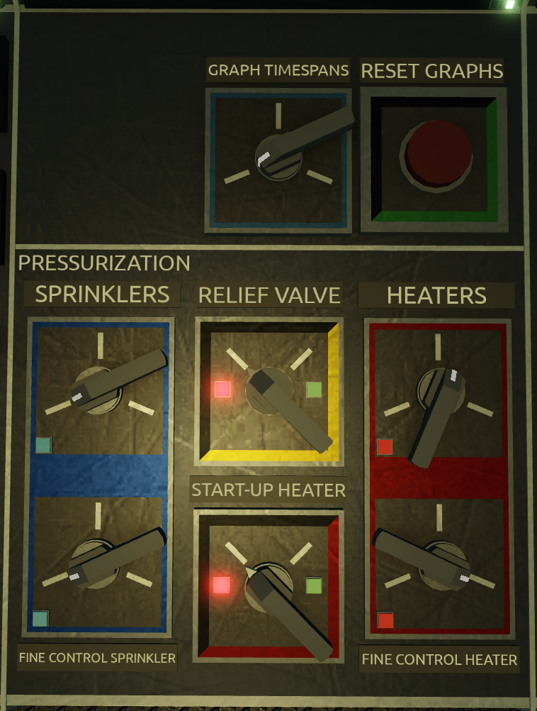
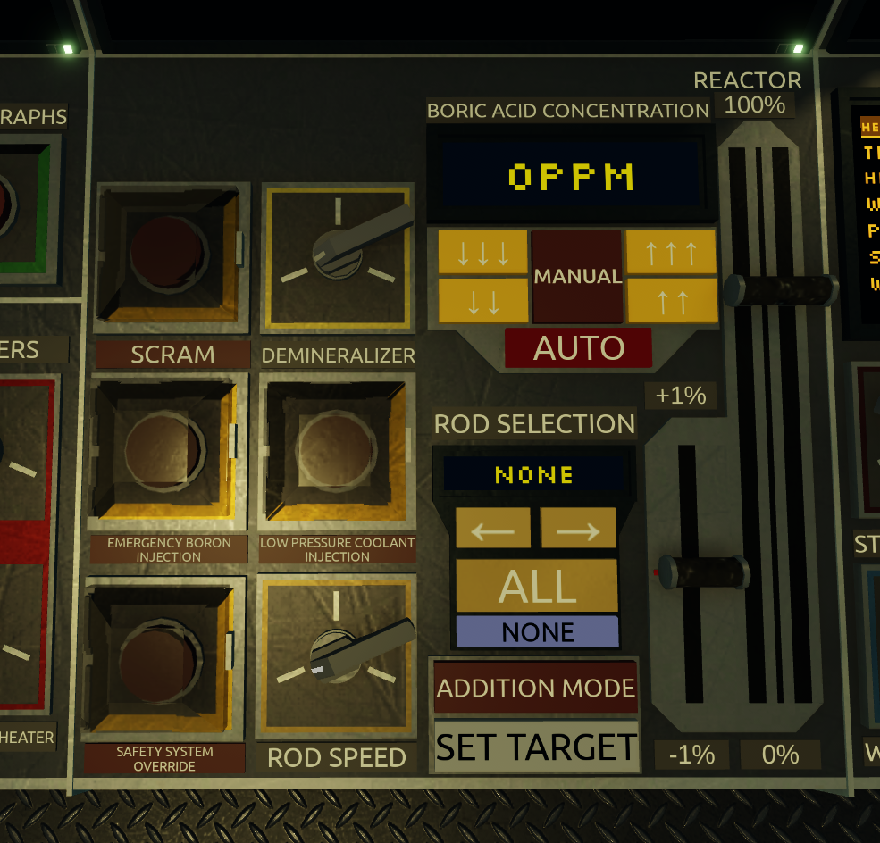
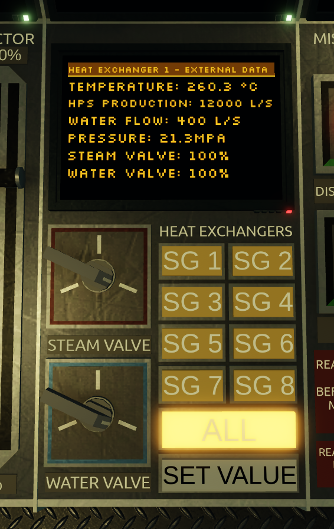
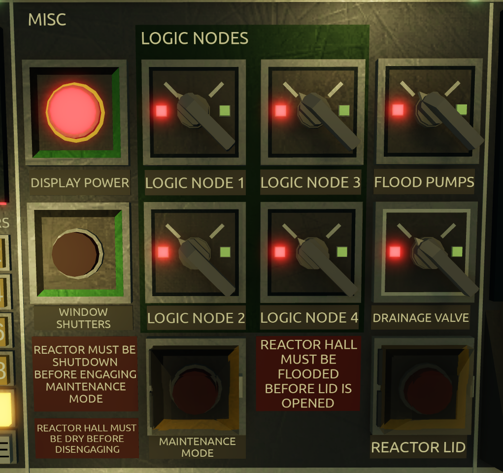

Steam Turbines
The reactor has 4 connectable turbines. Each of them have their own panel. Each has a different bypass, engagement and sync controls. This panel is located to the left side of the control panels.
This page will cover all the major systems within the nuclear power plant and their respective functions.

The reactor has 4 connectable turbines. Each of them have their own panel. Each has a different bypass, engagement and sync controls. This panel is located to the left side of the control panels.

The reactor has 4 coolant pumps. Each pump intakes distilled water and outputs heated water in it's own output tubes. They have their corresponding levers affecting flowrate from a max of 800 RPM to 0 RPM. Also in this panel are the makeup and letdown valves. The makeup valve increases the water level in the reactor whilst the letdown valve drains it. Also in this section is the OCCS switch.

This panel contains the controls needed to control the pressurizer's state. There are essentially two things that can be done to the Pressurizer and that is to either increase or decrease Pressure. To increase Pressurizer Pressure, use the Heaters section, and to decrease Pressure, use the Sprinklers. For more control, there exists Knobs to Fine tune Heaters or Sprinklers. In the middle are the Start-Up Heater and the Relief Valve. As the names imply, the Relief Valve quickly lets Pressure to decrease, while the Start-Up Heater helps with starting up building Pressure in the Pressurizer. The Relief Valve is useful when too much Pressure is built up and using just Sprinklers and decreasing Heaters isn't effective.

This panel contains most of the main controls for managing the reactor. Firstly, the SCRAM button. A SCRAM button rapidly drops the control rods into the reactor to shut it down. It can drop rods than manually. Then the ECCS or Emergency Boron Injection quickly injects Boric Acid into the reactor. Finally, Low Pressure Coolant Injection or LPCI quickly injects coolant into the reactor even with little steam pressure. The Rod Speed knob changes the Rod Insertion/Withdrawal speed and a Demineralizer knob used for increasing Water Quality and reducing Boric Acid concentration. here is a Boric Acid Concentration Panel, which allows the operator to increase or decrease the amount of Boron injected. Finally, there is the rod selection and insertion controls. There is one rough lever (0-100%) and one fine lever (-1-1%) for rod insertion. The rod selection depends on the rod groups the operator has saved prior to operation.

The heat exchanger is responsible for generating steam for the turbines to utilize. This panel ncludes a Steam Valve, a Water Valve, and a selector of Heat Exchangers, ranging from SG 1 to SG 8 (including a set value and ALL option). This is mainly used to control the Heat Exchangers you have hooked up to your plant and during normal operation should always stay at 100% for both Steam and Water Valves (in the case of a Nuclear Meltdown, it is helpful to set the Heat Exchangers to 0% for both Steam and Water to save the Turbines from exploding due to High Pressure).

The logic panel allows the operator to control various subsystems that arent built into the reactor such as emergency water inflow or emergency diesel generators. This is also where you find the maintenence mode and reactor lid buttons.